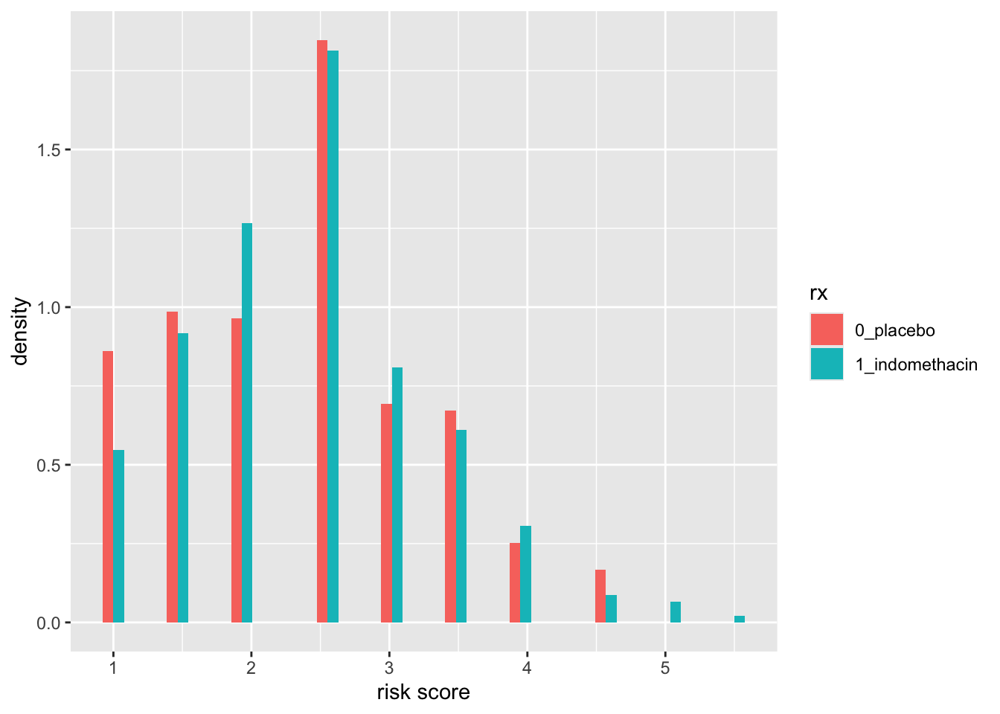
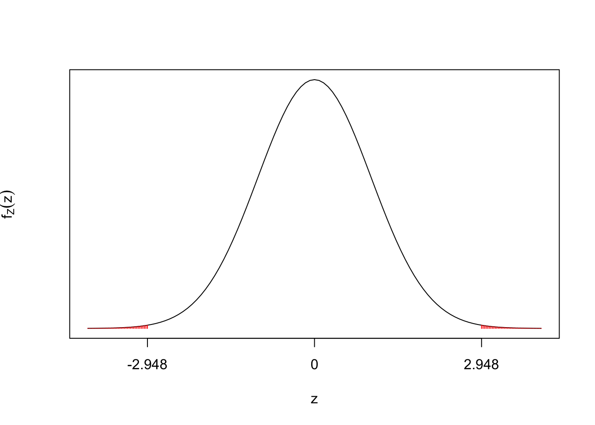

In this chapter we consider analysis of parallel group trials where the main outcome variable is binary: a patient is judged to have either a “successful” outcome, or an “unsuccessful” outcome. Binary data should not be analysed with the linear model from the last chapter, and so we introduce a new type of model: logistic regression models.
3.1 Example
We will analyse some data from a published phase III trial. The (anonymised) data have been made available in the medicaldata package1.
This was a randomised, placebo-controlled, double-blind clinical trial to investigate if a drug (indomethacin) could reduce the risk of pancreatitis (a sudden swelling of the pancreas that needs hospital treatment) for patients who have just had a medical diagnostic procedure (endoscopic retrograde cholangio pancreatography (ERCP))
The full dataset has 33 columns; we will consider a few for investigation:
We can see that the treatment group is in the rx column and the outcome is recorded as 1_yes if a patient has had pancreatitis following ERCP and 0_no otherwise. We consider one covariate: a risk score which records how many risk factors related to pancreatitis a patient had before treatment. We will treat risk as continuous.
To help understand the data, we will do a little exploratory analysis. To count outcomes in each treatment group we can do
so the proportion of pancreatitis cases was smaller for indomethacin: \(27/(27+268)\) versus \(52/(52+255)\).
Patients were randomised to each treatment group, so we should expect similar distributions of risks scores in each group, but there are bound to be some differences. We plot this as follows
library(tidyverse)ggplot(indo_rct, aes(x=risk, fill = rx)) +geom_histogram(aes(y =after_stat(density)), position ="dodge")

We can see lower risks scores are slightly more common in the placebo group. To compare means in each group we can
For patient \(j\) in treatment group \(j\), with \(j=1\) for placebo and \(j=2\) for indomethacin, define
\(Y_{ij}=1\) if the patient has pancreatitis following ERCP;
\(Y_{ij}=0\) otherwise,
so that \(Y_{ij}\) is a binary variable. We write
\[
Y_{ij}\sim Bernoulli(p_{ij}),
\] with \(\mathbb{E}(Y_{ij})=p_{ij}\) and \(Var(Y_{ij})=p_{ij}(1-p_{ij})\). If we define \(x_{ij}\) to be the risk score corresponding to patient \(ij\), we now want to describe how \(p_{ij}\) depends on treatment group \(i\) and risk score \(x_{ij}\). If we try writing an equation such as
\[
\mathbb{E}(Y_{ij})=p_{ij} = \beta_0 + \tau_i + \beta_1x_{ij},
\] (with the usual constraint such as \(\tau_1=0\)), we have the problem that \(p_{ij}\) must lie in the interval [0,1], which puts an awkward constraint on the parameters \(\beta_0,\tau_2,\beta_1\). Instead, we transform \(p_{ij}\) to give an unconstrained quantity. We write \[
\log\left(\frac{p_{ij}}{1-p_{ij}}\right) = \beta_0 + \tau_i + \beta_1x_{ij}.
\tag{3.1}\] This is called a logistic regression model.
\(\log\left(\frac{p_{ij}}{1-p_{ij}}\right)\) is known as the logit transform, and transforms a quantity on the interval \((0,1)\) to the interval \((-\infty, \infty)\).
Transforming back, we get \[
p_{ij} = Pr(Y_{ij}=1) = \frac{\exp(\beta_0 + \tau_i + \beta_1x_{ij})}{1+ \exp(\beta_0 + \tau_i + \beta_1x_{ij})}
\tag{3.2}\]
There is no error term \(\varepsilon_{ij}\). For ordinary linear regression when we assume \(Y_{ij}\) is normally distributed, the regression equation gives its mean, and its variance \(\sigma^2\) comes from the error term \(\varepsilon_{ij}\sim N(0,\sigma^2)\). Here, because \(Y_{ij}\) has a Bernoulli distribution, both its mean and its variance are specified by \(p_{ij}\).
WarningNonlinearity
Note that this probability is a non-linear function of \(x_{ij}\). In general, for nonlinear functions \(f\) and random variables \(X\), we have \[
f(\mathbb{E}(X))\neq \mathbb{E}(f(X))
\] This means that if we want to get the population proportion of patients who would have pancreatitis in each treatment group, the mean probability for the population, assuming different risk scores across the population, we can’t just plug in the mean risk score into Equation 3.2: we would need to calculate Equation 3.2 for each risk score value in our population and then calculate the mean.
3.3 Estimands for binary outcomes
For the estimand (see Section 2.4) we need a plain-English definition of the effect of the treatment, that is suitably clear and detailed. We then need to relate the parameters of our logistic model to this estimand, so that we can obtain our numerical estimate. For binary outcomes, this can be a little awkward.
3.3.1 Odds ratios
For an individual patient given indomethecin, their odds of pancreatitis are defined to be \[
\frac{P(Y_{2j}=1)}{P(Y_{2j}=0)} = \frac{P(Y_{2j}=1)}{1-P(Y_{2j}=1)}
\] The ratio of their odds of pancreatitis given indomethecin to their odds of pancreatitis given the placebo is then
\[
OR:=\frac{P(Y_{2j}=1)}{P(Y_{2j}=0)}\bigg/\frac{P(Y_{1j}=1)}{P(Y_{1j}=0)} =\left( \frac{P(Y_{2j}=1)}{1-P(Y_{2j}=1)}\right)\bigg/\left( \frac{P(Y_{1j}=1)}{1-P(Y_{1j}=1)}\right)
\] Taking logs, we get \[\begin{align*}
\log(OR)&=\log\left( \frac{P(Y_{2j}=1)}{1-P(Y_{2j}=1)}\right) - \log \left( \frac{P(Y_{1j}=1)}{1-P(Y_{1j}=1)}\right)\\
&= \beta_0 + \tau_2 + \beta_1x_{2j} - (\beta_0 + \beta_1x_{1j})\\
&=\tau_2,
\end{align*}\] where we have \(x_{2j}=x_{1j}\) because we are considering the same patient from placebo to indomethecin.
So if we define our estimand as
“the ratio of a patient’s odds of pancreatitis given indomethecin to their odds of pancreatitis given the placebo, for a patient meeting the eligibility criteria of the trial.”
then the estimand corresponds to \(\exp(\tau_2)\): we estimate the odds ratio by estimating \(\tau_2\) and then calculating the exponent.
Note that
if this odds ratio is \(<1\) (so \(\log \tau_2<0\)), indomethecin has a beneficial effect: pancreatitis is less likely given indomethecin than if given a placebo;
if this odds ratio is \(>1\) (so \(\log \tau_2>0\)), indomethecin has a harmful effect: pancreatitis is more likely given indomethecin than if given a placebo.
WarningOdds and bookmakers
When you see odds quoted by bookmakers or reported in the media, these are odds against; here we use odds for: \[
\mbox{odds against}:=\frac{1-p}{p},\quad \mbox{odds for}:=\frac{p}{1-p},
\] Bookmakers use the phrase “odds on” to mean \(1-p < p\): the event is more likely to occur than not occur and the odds against are less than 1.
3.3.2 Relative risks and risk differences
Other common ways to specify estimands/describe the effects of a treatment are the relative risk (\(RR\)) and risk difference (\(RD\)) defined as \[\begin{align*}
RR&:= \frac{P(Y_{2j}=1)}{P(Y_{1j}=1)}\\
RD&:= P(Y_{1j}=1) - P(Y_{2j}=1).
\end{align*}\]
A difficulty with the risk difference is that depends on the covariate value \(x_{ij}\): the covariate value doesn’t cancel out the way it did for the odds ratio. So we would either have to calculate a mean risk difference, averaging over all possible values of \(x_{ij}\), or choose a representative value of \(x_{ij}\) and plug this in.
The relative risk has a similar problem, but note that if both \(P(Y_{2j}=1)\) and \(P(Y_{1j}=1)\) are sufficiently small, then the relative risk will be approximately equal to the odds ratio.
Relative risks and risk difference are more commonly used when there are no covariates to consider other than the treatment of interest.
3.4 Implementing the logistic regression analysis in R
Model parameter estimates for Equation 3.1 can be obtained by maximum likelihood estimation. The likelihood function is \[
L(\beta_0,\tau_2,\beta_1;\mathbf{y})=\prod_{i=1,2}\,\prod_{j=1,\ldots,n_i}p_{ij}^{y_{ij}}(1-p_{ij})^{1-y_{ij}},
\] where \(y_{ij}\) is the observed value of \(Y_{ij}\), and \(p_{ij}\) is defined in Equation 3.2. We cannot analytically obtain formulae for maximum likelihood estimates \(\hat{\beta}_0, \hat{\beta}_1,\hat{\tau}_2\), so numerical optimisation has to be used.
Inference is based on an approximation that maximum likelihood estimators are normally distributed. To get a sense of whether this approximation is reasonable, we should check that the numbers of ‘successes’ and ‘failures’ in each treatment group are not too small, preferably at least 10. We have seen this already, but to confirm:
The fitted probability of pancreatitis for each patient is \[
\hat{p}_{ij} = \frac{\exp(\hat{\beta}_0 + \hat{\tau}_i + \hat{\beta}_1x_{ij})}{1+ \exp(\hat{\beta}_0 + \hat{\tau}_i + \hat{\beta}_1x_{ij})}.
\] These are available in R as glm1$fitted.values. Fitted values would tend to 0 or 1 as parameter estimates tend to \(-\infty\) or \(\infty\), and this would indicate the normal approximation for the m.l.e. is not appropriate. We can check this has not happened with the command
summary(glm1$fitted.values)
Min. 1st Qu. Median Mean 3rd Qu. Max.
0.04761 0.08910 0.11734 0.13123 0.17217 0.33731
To test whether any particular parameter is significantly different from 0, we use a “Wald test”2. For example, to test the null hypothesis \(\tau_2=0\), we calculate \[
Z:=\frac{\hat{\tau}_2}{\sqrt{\widehat{Var}(\hat{\tau}_2)}}.
\] If \(H_0\) is true, then approximately \(Z\sim N(0,1)\). In the R output, the \(Z\) value and corresponding \(p\)-value are given in the coefficients table for each parameter.

The reported \(p\)-value is 0.003198, so there is strong evidence against \(H_0\). We can also see strong evidence against \(H_0:\beta_2=0\), so the risk covariate is also significant.
3.4.2 Confidence intervals
Approximate 95% confidence intervals for model parameters can be computed as, for example \[
\hat{\tau}_2 \pm 1.96\sqrt{\widehat{Var}(\hat{\tau}_2)}.
\] In R, to do the calculations, we do
The confint function uses a different method (profile likelihood, outside the scope of this module) which is considered to be an improvement as it doesn’t rely on the same assumptions. We will use intervals based on confint in this module, noting that they will be fairly similar to, if not exactly equal to the interval above:
Recall that \(\tau_2\) is the log of the odds ratio. We can obtain a confidence interval for the odds ratio simply by taking exponents: a 95% confidence interval for the odds ratio (odds of pancreatitis given indomethicin / odds of pancreatitis given placebo):
When reporting the results, we should cover the same points as in the previous chapter
give the hypothesis test conclusion and \(p\)-value;
refer to the interpretation of the null hypothesis rather than the equation (e.g. “no treatment effect” rather than “\(\tau_2=0\)”);
report and estimate and confidence interval for the treatment effect;
but in addition, it can be helpful to report observed proportions in each group, as an odds ratio is harder to interpret.
So, an example summary of the results would be
“We observed that 9% of patients treated with indomethicin had pancreatitis; the percentage was 17% in the placebo group. We reject the null hypothesis of no treatment effect (an odds ratio equal to 1) at the 5% level of significance (\(p\)-value 0.003). Using a logistic regression model to account for differences in risk factors between patients, a 95% confidence interval for the odds ratio (odds of pancreatitis given indomethicin to odds of pancreatitis given placebo) is (0.28, 0.77).”
3.5 Alternatives analyses
We could ignore the risk covariate and compare the proportions directly. There are standard tests for comparing two proportions, which we won’t consider in this module. Here, we just make one observation.
The estimated odds ratio from the logistic regression model was \(\exp(-0.7543 )\sim 0.47\). If we estimate the odds ratio directly from the data:
we get \[
\frac{27/(27+268)}{268/(27+268)}\bigg/\frac{52/(52+255)}{255/(52+255)} = \frac{27\times 255}{268\times52}\simeq 0.49.
\] This is very similar, but slightly higher. We can understand this from our earlier investigation where we noted slightly lower risk scores in the placebo group. As an increasing risk score increases the probability of pancreatitis, ignoring risk score would result in us underestimating (slightly) the effectiveness of the drug.
3.6 Predictions
To help with communicating the results, it can be useful to report estimates of the proportion of patients given particular covariates who would have pancreatitis. We should also report uncertainty in the estimate of any proportion.
We derive an estimate and a confidence interval on the logit scale (\(\log(p/(1-p))\)), and then transform the estimate and interval back to the probability scale.
Consider all patients on indomethecin with a risk score of 3. If \(p\) is the population proportion of all these patients who would have pancreatitis, then we define \[
\mu:=\log\left(\frac{p}{1-p}\right) = \beta_0+\tau_2+3\beta_1
\] Then our estimate is \[
\hat{\mu}:=\hat{\beta}_0+\hat{\tau}_2+3\hat{\beta}_1
\] where we obtain \(\hat{\beta}_0,\hat{\tau}_2,\hat{\beta}_1\) as the parameter estimates from the R output. For a confidence interval for \(\mu\), we compute \[
\hat{\mu}\pm 1.96\sqrt{\widehat{Var}(\hat{\mu})}
\] and we calculate the estimated variance \(\widehat{Var}(\hat{\mu})\) as \[
\widehat{Var}(\hat{\mu})=(1\quad 1 \quad 3)\left(\begin{array}{ccc} \widehat{Var}(\hat{\beta}_0) & \widehat{Cov}(\hat{\beta_0},\hat{\tau}_2) & \widehat{Cov}(\hat{\beta}_0,\hat{\beta}_1)\\
\widehat{Cov}(\hat{\tau}_2,\hat{\beta}_0) & \widehat{Var}(\hat{\tau}_2)& \widehat{Cov}(\hat{\tau}_2,\hat{\beta}_1)\\
\widehat{Cov}(\hat{\beta}_1,\hat{\beta}_0) & \widehat{Cov}(\hat{\beta}_1,\hat{\tau}_2) & \widehat{Var}(\hat{\beta}_1)
\end{array}\right)\left(\begin{array}{c}1 \\ 1\\ 3\end{array}\right)
\] The variance covariance matrix is \[\left(\begin{array}{ccc} \widehat{Var}(\hat{\beta}_0) & \widehat{Cov}(\hat{\beta_0},\hat{\tau}_2) & \widehat{Cov}(\hat{\beta}_0,\hat{\beta}_1)\\
\widehat{Cov}(\hat{\tau}_2,\hat{\beta}_0) & \widehat{Var}(\hat{\tau}_2)& \widehat{Cov}(\hat{\tau}_2,\hat{\beta}_1)\\
\widehat{Cov}(\hat{\beta}_1,\hat{\beta}_0) & \widehat{Cov}(\hat{\beta}_1,\hat{\tau}_2) & \widehat{Var}(\hat{\beta}_1)
\end{array}\right)\] is derived from a normal approximation for the distribution of the maximum likelihood estimator, which we won’t consider here, but is provided by R:
for the population of patients on on indomethecin with a risk score of 3, we estimate that 10.9% of them will have pancreatitis;
a 95% confidence interval for this proportion is (7.5%, 15.5%).
3.6.1 Obtaining predictions with R
Instead of doing all the calculations by hand, we can obtain \(\hat{\mu}\) and \(\sqrt{\widehat{Var}(\hat{\mu})}\) directly form R using the predict function, setting up a new dataframe newdata with the covariate values at which we wish to make the prediction:
We can make a nice visualisation in R using the ggeffects package with ggplot2:
library(ggeffects)library(ggplot2)predictions <-predict_response(glm1, terms =c("risk", "rx"))plot(predictions) +labs(title ="The effect of indomethecin on reducing \nthe risk of pancreatitis post ERP",x ="Risk score before treatment",y ="Percentage of patients with pancreatitis",color ="Treatment" ) +theme_minimal()
named after Abraham Wald, 1902-1950. Wald made lots of contributions to mathematics and statistics, and is also famously associated with this story of survivorship bias↩︎